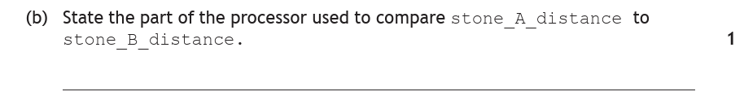
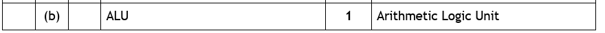
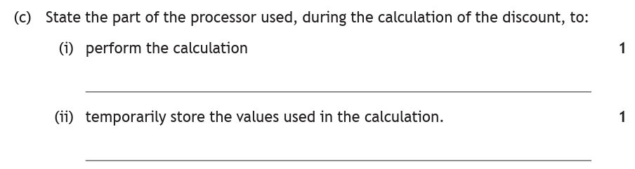
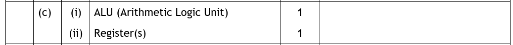
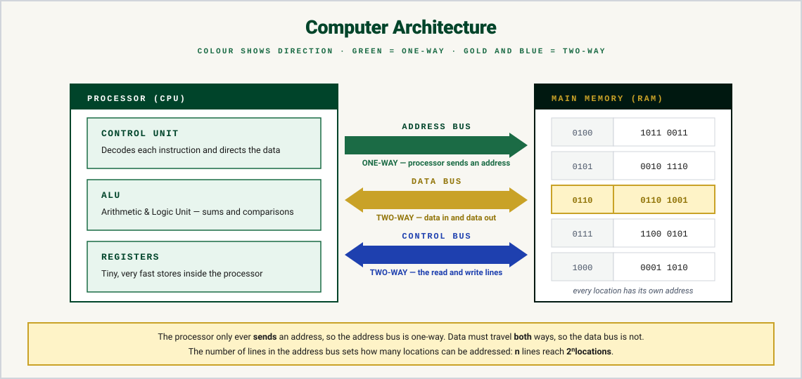
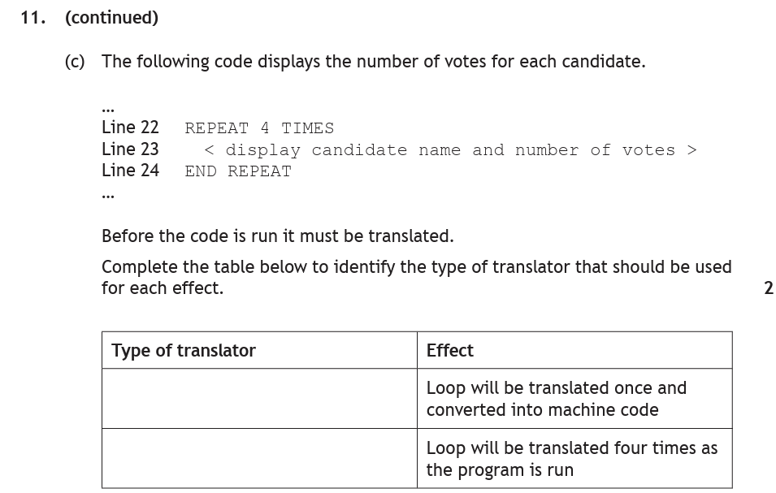
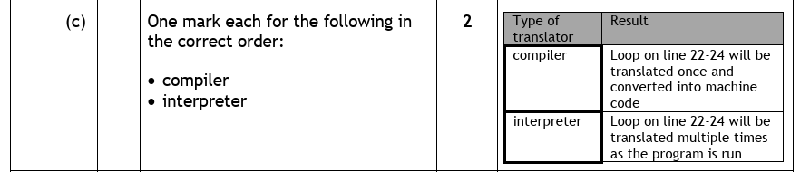
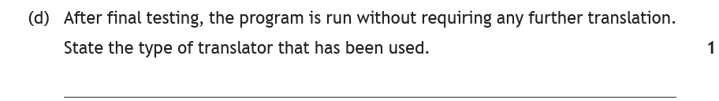
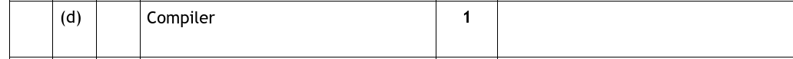

Introduction
Every program you've written this year was run by the same piece of hardware: the processor — the part of the computer that does the "thinking". This page looks inside it: the three parts of the processor, how data travels between the processor and memory along the buses, and how your Python code gets turned into the only language the processor actually speaks — binary machine code.
Key Terms
The Parts of the Processor
The processor has three parts, and each has one clear job. Exam questions describe a task and ask you to state the part responsible — so learn these as job descriptions:
| Part | Its job | Spot it in a question by… |
|---|---|---|
| ALU | Does all the calculations (arithmetic) and logical decisions (comparisons) | "perform the calculation", "compare the values", "decide if x > y" |
| Control unit | Decodes and executes instructions, and keeps the other parts in time with its clock | "in charge", "manages", "executes instructions" |
| Registers | Temporarily store values inside the processor, especially during calculations | "temporarily store", "hold the values being worked on" |
Here's the connection to your own programs: every time your Python code does total = num1 + num2 or checks if age >= 17:, that's the ALU doing the adding and comparing — with the values sitting in registers while it works, and the control unit conducting the whole orchestra.
Worked examples
Both of these hand you a job description and ask for the name of the part. Write your answer down before opening each one.

How to tackle it: the command word is state — name the part, no explanation needed. The key word in the question is "compare". Comparing is a logical decision, and logical decisions are the job of the ALU.

Either "ALU" or "Arithmetic Logic Unit" earns the mark.

How to tackle it: two halves, and each contains its own giveaway phrase:
- (i) "perform the calculation" — arithmetic is the ALU's job → ALU
- (ii) "temporarily store the values" — temporary storage inside the processor is exactly what registers are for → register(s)

Notice how the question hands you the job description and asks for the name — that's why learning the parts as job descriptions pays off.
Memory & the Buses
The processor is fast but tiny — it can't hold your whole program. Programs and their data live in main memory, which is divided into memory locations, each with its own unique address (like houses on a very long street). When the processor needs something, it fetches it from memory — and that transfer happens along two buses:
- The address bus carries the address of the memory location being accessed, from the processor to memory — "I want what's at address 3,000,000, please."
- The data bus carries the actual data between the processor and that location — the value itself making the journey.

The Address & Data Buses
Step through a value's journey between the processor and memory. Fetch a value and it comes back along the data bus into a register; switch to Store and watch the data bus reverse — while the address bus carries on running the same way it always does. Pick any address to prove that each location is found by its own unique number.
Translators — Interpreters & Compilers
We write our programs in Python. Python is easy for us to read (it looks a bit like English), but the processor only understands machine code — binary 1s and 0s. So before any program can run, it must be translated. The software that does this is a translator, and there are two kinds:
| Interpreter | Compiler | |
|---|---|---|
| How it translates | Line-by-line, every time the program runs | The whole program at once, producing a machine-code version |
| Advantages | Errors are reported live, line by line, as they happen — great while writing and fixing code | Once compiled, the program runs fast — and it can be run again and again without any further translation |
| Disadvantages | Slower to run — every line is re-translated on every run (a loop that repeats 4 times is translated 4 times!) | You must wait for the whole program to compile before running it; all the errors arrive in one big list at the end |
What we use — Python — is interpreted: that's why you see your errors "live" as they happen. Finished software that you download is compiled: it was translated once by the developers, and your machine just runs the machine code.
Worked examples
Translator questions are nearly always decided by a single phrase in the question. See if you can spot it in each of these before opening the walkthrough.

How to tackle it: this is the "killer fact" in exam form. Match each effect to the translator's behaviour:
- "Loop will be translated once and converted into machine code" — translating everything once is what a compiler does.
- "Loop will be translated four times as the program is run" — re-translating each line every time it runs (including every pass of a loop) is the interpreter.


How to tackle it: "run without requiring any further translation" — only one translator produces a machine-code version you can keep and re-run: the compiler. (An interpreter would have to translate the program again on every single run.)

Practice Questions
A ferry booking program checks whether the number of cars on board is greater than the ferry's capacity. State the part of the processor used to:
- compare the number of cars to the capacity
- temporarily store both values during the comparison.
Marking Instructions
a) ALU (Arithmetic Logic Unit) (1 mark)
b) Register(s) (1 mark)
Describe the purpose of the control unit within the processor.
Marking Instructions
It decodes and executes instructions, and keeps the other parts of the processor in time (synchronised with its clock).
When a program needs a value from main memory, two buses are involved in the transfer. Describe the role of the address bus and the data bus in fetching the value.
Marking Instructions
The address bus carries the unique address of the memory location being accessed from the processor to memory (1 mark). The data bus then carries the value itself between memory and the processor (1 mark).
A program contains a loop that repeats 10 times. Identify the type of translator being used in each case below:
- The loop is translated 10 times while the program runs.
- The whole program is translated once into machine code, which is then run.
Marking Instructions
a) Interpreter (1 mark) — it re-translates each line every time it is executed.
b) Compiler (1 mark) — it translates everything once, in advance.
A pupil writes a program in Python. Explain why the program must be translated before the processor can run it, and state one advantage of using an interpreter while writing the program.
Marking Instructions
The processor only understands machine code (binary), so the high-level Python code must be translated into machine code before it can be executed (1 mark). An interpreter reports errors live, line-by-line as the program runs, which makes finding and fixing mistakes easier during development (1 mark).